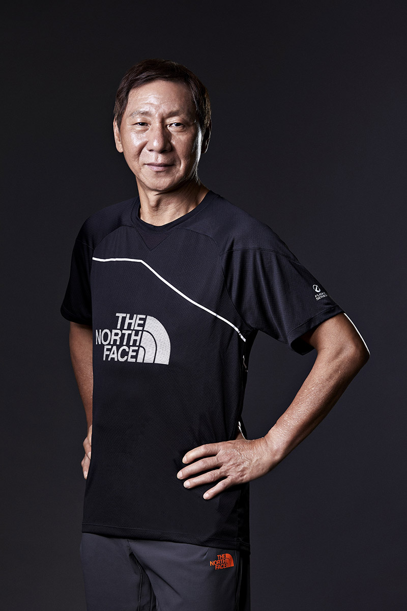
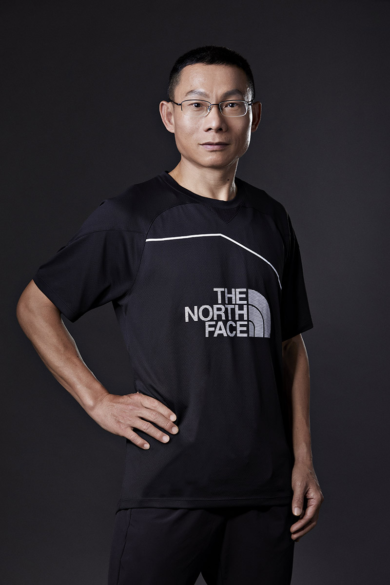
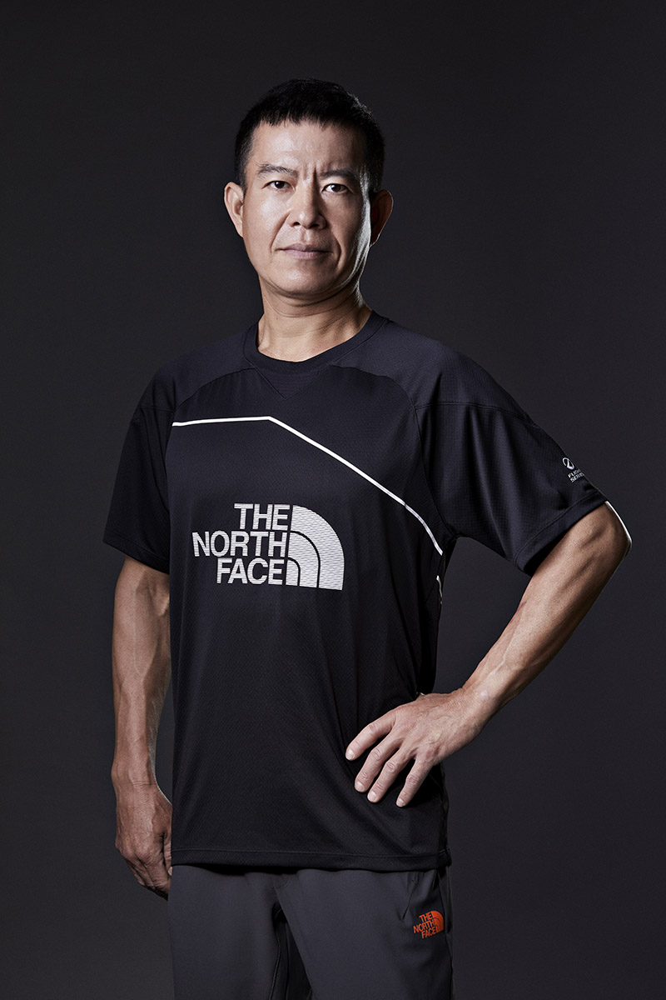

2019 TNF100越野跑講座
一、講座目標：
-
提高一般跑友對於越野跑的興趣，進而達到引領他們踏入野練的世界。
-
透過教練與名人分享的方式，讓跑友深入淺出的了解越野跑的各種技巧與有趣之處。
-
除了野練訓練內容以外，針對環境保護，也請講師分享無痕山林的觀念，對環保與愛護山林盡一份心力。
二、主辦單位：The North Face、運動筆記
三、活動時間：2019年3月2日至2019年3月30日止。
上課時間為週六下午14:00-16:30。
如遇當地氣象局發布豪大雨或陸上颱風警報，或其他不可抗力因素，活動課程調整日期另外公告。
四、招募對象：TNF100賽事參賽者，或已有越野跑運動習慣，並對戶外活動有興趣的跑友。
五、講座師資(排序依姓氏筆畫由少至多)：
|  |
何萬豊 台灣越野跑的先驅前輩，人稱阿公的何萬豊，擁有數十年豐富的越野驚艷，由他設計的越野路線，莫不讓人印象深刻，同時也是捷兔夜跑團發起人（晚上越野跑）。 |
|  |
周平記 在短距離賽事、馬拉松賽事、超級馬拉松賽事中皆佔有一席之地，並存有相當好的成績。更難得的，在越野賽、登高賽，甚至是自行車賽事中也能常見他頂尖的表現。他曾因為受傷仍參賽的英勇，而被稱為鋼鐵人。 |

|
黃崇華 中國文化大學體育學系畢業，越野跑、馬拉松未間斷跑齡29年。也是1997年海峽兩岸長跑台灣代表隊隊員，2000年荷蘭世界盃超級馬拉松100公里台灣代表隊隊員，2000年IAU世界超級馬拉松總會認證 100KM 8:10:06 (暫列台灣歷年第十傑)。三重箭歇團創始人兼總教練，2016同時擔任課程總教練，2017 The North Face簽約教練，2018新北市萬金石馬拉松官方訓練營總教練。 |
|  |
闕鐵城 本職是珠寶設計師的闕鐵城，其實是因為想減肥、放鬆壓力疲勞而開始跑步的。2015年報名了臺北大學12小時超級馬拉松賽。為了訓練超級馬拉松競賽，除了在田徑場繞圈之外，他也嘗試往戶外空間探索練習。如果每天跑長距離對他有效，那麼超級馬拉松或許就更需要累積大量的長距離，月跑量攀升到上千公里以上。高量的練習使得他在12小時賽前一周的國道馬拉松跑出個人紀錄3小時03分，3月22日的臺北大學超馬賽以133.6公里奪冠，並成為本場賽事的最高紀錄。 |
六、講座內容：主辦單位保留變更課程之權利，講師得依狀況微調內容。
3月23日第三場越野跑講座:野練成鋼─從馬拉松到越野&LNT無痕山林，因講師臨時行程安排無法配合，故講座取消，有報名本場活動的跑友，主辦單位將全額退費，並寄贈運動上衣乙件，若造成您的不便，敬請見諒。若有相關問題，歡迎來信洽詢，聯繫信箱：cliff.wu@bijo.co
|
堂數 |
日期 |
週 |
時間 |
地點 |
講座主題 |
講師 |
|
一 |
3月02日 |
六 |
14:00~16:00 |
The North Face |
野練成鋼─如何準備一場越野賽，公路跑和越野跑有什麼不同及越野跑的小技巧 |
黃崇華 |
|
16:00~16:30 |
LNT無痕山林─不留下痕跡 |
丁鉉旗 |
||||
|
二 |
3月09日 |
六 |
14:00~16:00 |
The North Face |
野練成鋼─夜間越野技術及從登山到越野 |
何萬豊 |
|
16:00~16:30 |
LNT無痕山林─不留下痕跡 |
廖奕璿 |
||||
|
三 |
3月23日 |
六 |
14:00~16:00 |
The North Face |
野練成鋼─從馬拉松到越野 |
闕鐵成 |
|
16:00~16:30 |
LNT無痕山林─不留下痕跡 |
廖奕璿 |
||||
|
四 |
3月30日 |
六 |
14:00~16:00 |
The North Face |
野練成鋼─如何有效率的訓練及用頭腦跑步 |
周平記 |
|
16:00~16:30 |
LNT無痕山林─不留下痕跡 |
廖奕璿 |
七、報名方式：一律網路報名
-
費用：單堂課程NT$250，報名即贈送運動上衣乙件(市價$890) + The North Face$500商品抵用券(報一堂送一張，報兩堂送兩張，以此類推)。
-
報名日期：即日起至2/28止，報名35人額滿提前截止。（逾期未完成繳費手續者，報名系統將自動取消其報名資格。）
-
因事不克參加者，可申請轉讓或是退費，於課程前十天取消報名退費二分之一，逾期恕不退費。申請退費者請提供銀行帳戶，退回金額將扣除行政手續費。
-
如有報名相關疑問，請寫信到客服信箱cliff.wu@biji.co詢問

|
XS |
S |
M |
L |
XL |
2L |
|
|
胸圍 |
45 |
48 |
50 |
52 |
54 |
56 |
|
肩寬 |
37 |
40 |
43 |
46 |
48 |
50 |
|
衣長 |
65 |
68 |
70 |
72 |
74 |
78 |
|
袖長 |
17 |
18.5 |
19.5 |
21 |
22 |
24 |
八、其他注意事項：
凡報名2019 TNF100越野跑講座，即可獲得The North Face $500實體商品抵用券乙張(直營門市及官網皆可使用)，並於結帳時輸入折價券序號，即可立即享優惠。報名一堂送一張、兩堂送兩張以此類推； The North Face $500實體商品抵用券將於講座當天統一發送。
使用條款與細則
-
領取折價券需下載TNF Taiwan APP並登入會員。
-
每張折價券限領一次，且限兌換一次。
-
使用折價券須出示TNF Taiwan APP，並現場”使用優惠券”供店員確認。
-
若折價券使用期限結束，會自動移除。
-
若結帳商品標註為”不適用折價券”，則該商品不能使用折價券進行折抵。
-
折價券僅能使用一次且不找零，一經使用無法恢復。
-
使用折價券的訂單如取消或退貨，折價券將自動失效不會歸還。
-
折價券不可折抵運費。
-
本券需以商品原價兌換並不得與櫃內其他活動併用。
-
單筆消費滿$3000即可折抵$500 (部分商品基本款及新品除外)。
-
本券僅限於The North Face 直營門市/櫃位/官網使用。
-
商品之販售價格，請依各櫃位所標示價格為準。
-
消費者不得要求更換本折價券之折價金額，或將折價金額折現金或等值商品，並僅得使用於本折載明之品牌。
-
每次消費者僅得使用一張商品抵用券，並於結帳前將本券交給櫃位店員以進行指定商品的折價。未事先出示者，請恕僅能本券使用於下次消費。
-
偽造或變造本券者無效， The North Face 除有查證折價券真偽之權利外，亦將對偽變造行為追究法律責任。
-
使用本券後，若欲辦理退貨，採換貨方式處理，請恕無法退回現金或折價。
-
The North Face有權因情勢變更相關活動內容之權利，本券若因任何原因而遺失、損毀或無法辨識，則失其效力，恕不接受掛失或補發。
-
領用期限: 2019/3/3~4/19；使用期限 : 2019/3/22~5/14，逾期視同作廢。
-
台灣威富品牌有限公司有最終修改權利。
九、其他注意事項：
-
本課程於戶外開放田徑場舉辦，將依照現場狀況決定訓練路線及方式，請學員務必依照教練及助教的指示，在安全區域內練習，如發生身體不適狀況，應即向主辦單位請求協助支援。
-
本課程謝絕旁聽，如有特殊需求請洽隨班助教。
-
本課程上課日(不包含自由參加的團練日)會為學員投保100萬意外險與10萬意外醫療險。
-
如您曾發生以下病症及狀況，屬猝死高危險群，請諮詢醫師專業判斷，慎重考慮自身安全，切勿勉強參加。
-
不明原因的頭暈、胸部不適（胸悶、胸痛）、呼吸困難
-
突然失去知覺
-
高血壓（>140/90mmHg）
-
心臟病
-
腎功能異常
-
糖尿病
-
高血脂（總膽固醇>240mg/Dl）
-
家族心臟病史（一等親在60歲前發生心臟病或猝死）
-
癲癇
-
學員肖像、姓名，及訓練課程之錄影、相片，除主辦單位基於宣傳用途之播放、展出或登載行為外，不得另作其他用途。
完成報名繳費之學員，視為同意以上聲明。